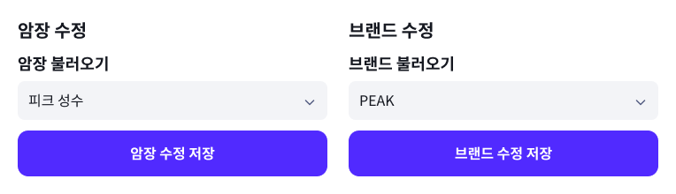
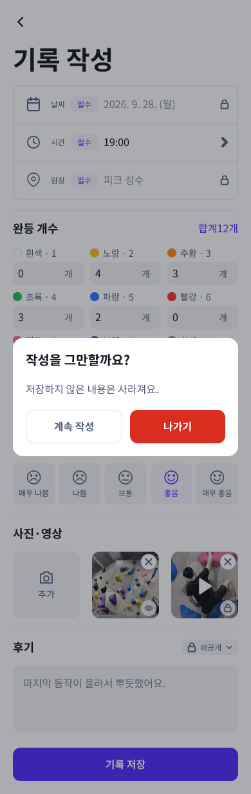

<!doctype html><html lang="ko"><meta charset="utf-8"><meta name="viewport" content="width=device-width,initial-scale=1"><title>Holdlog 브랜드·암장 폼과 나가기 확인</title><style>body{margin:0;padding:24px;background:#f3f4f7;font-family:sans-serif;color:#252830}article{background:white;padding:24px;margin:0 0 24px;border-radius:12px}h2{font-size:18px}img{max-width:100%;height:auto}.mobile img{width:390px}</style><article><h2>A02.01 암장·브랜드 관리</h2></article><article><h2>기존 항목 수정 — 바뀌는 선택칸과 저장 버튼</h2></article><article class="mobile"><h2>02.04.05 개인 기록 작성 / 나가기 확인</h2></article></html>